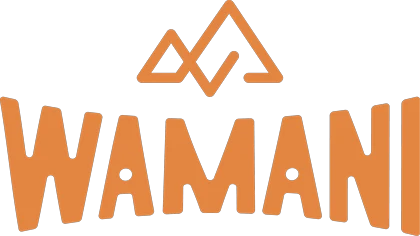

TURISMO & AVENTURA
Vos elegí la experiencia, nosotros nos encargamos del resto.
Escribinos por WhatsApp
EN EL DÍA
Cascada Santuyoc y Angosto de Jaire
1
día
Termas de Jordán
1
día
Atardecer en las Salinas
1
día
Lagunas de Yala y Termas de Reyes
1
día
Recorriendo la Quebrada
1
día
CON NOCHE EN LA SELVA
Conociendo las Yungas
3
días
Yungas Express
2
días
TRAVESÍAS A PIE
Tilcara – Calilegua
65
km
Humahuaca – Las Yungas
5
días
Iruya – Nazareno
5
días
WAMANI SELECTA
Finca la Fé
4
días
The Canuto Glamping
3
días
Ecolodge de la Selva
3
días
JUJUY A MEDIDA
Recorré la provincia a tu manera
La web
El blog
Agencias
Instagram
Facebook
wamaniturismo.com
San Salvador de Jujuy